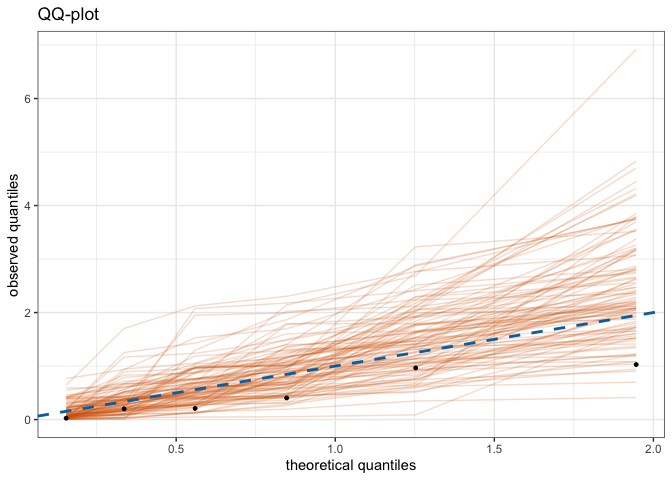

The goal of erf is to predict extreme quantiles within the quantile forest framework of Athey, Tibshirani, and Wager (2019, https://doi.org/10.1214/18–AOS1709).
Installation
install.packages("erf")You can install the development version from GitHub with:
# install.packages("devtools")
devtools::install_github("nicolagnecco/erf")Example
This is a basic example which shows you how to peform prediction with erf. Let us create some datasets and fit a quantile_forest from the grf package.
library(erf)
library(grf)
set.seed(42)
n <- 500
p <- 10
X <- matrix(rnorm(n * p), n, p)
Y <- X[, 1] * rnorm(n)
object <- quantile_forest(X, Y, quantiles = c(0.1, 0.5, 0.9))Now we can create a test dataset and predict extreme quantiles with predict_erf.
n_test <- 20
X.test <- matrix(rnorm(n_test * p), n_test, p)
Y.test <- X.test[, 1] * rnorm(n_test)
quantiles <- c(.99, .999)
threshold <- 0.8
res <- predict_erf(object, quantiles = quantiles, threshold = threshold,
newdata = X.test, model_assessment = TRUE,
Y.test = Y.test, out_of_bag = FALSE)
head(res$predictions)
#> quantile = 0.99 quantile = 0.999
#> [1,] 1.325343 2.375495
#> [2,] 1.325832 2.494542
#> [3,] 1.653963 2.544473
#> [4,] 1.169692 1.902427
#> [5,] 1.188074 2.226763
#> [6,] 2.631909 3.659733
res$plot
References
Athey, Susan, Julie Tibshirani, and Stefan Wager. 2019. “Generalized Random Forests.” The Annals of Statistics 47 (2): 1148–78. https://doi.org/10.1214/18-AOS1709.